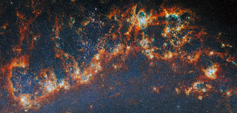

About the Guide
The Cosmic Field Guide is your ultimate resource for exploring the cosmos.
Explore the Cosmos from your Browser
Embark on a journey through the stars and beyond with our comprehensive field guide.
🪐Planets
Explore our rocky worlds, gas giants, and the system that orbits our home star.
🌌Galaxies
Learn about galaxy types and black holes.
🚀Space Missions
Discover missions like Artemis II, Voyager, and the James Webb Space Telescope.
Featured Discovery
The James Webb Space Telescope has revealed some of the deepest infrared images of the universe ever captured, allowing scientists to study galaxies formed shortly after the Big Bang.
